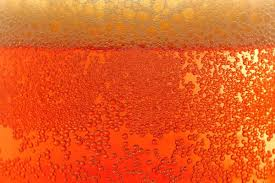

<navbar id="navbar" class="app-navbar no-search">
  <picture class="photoPicture" >
    <source srcset="
      ../images/beers-md.jpg 1020w,
      ../images/beers-bg.jpg 1024w
      " 
      media="(min-width: 1024px)">
    <source srcset="
      ../images/beers-bg-lg2.jpg 425w,
      ../images/beers-bg.jpg 768w,   
      ../images/beers-desktop.jpg 1024w
      " 
      media="(min-width: 768px)">

    <source srcset="
      ../images/beers-bg-lg2.jpg 425w,
      ../images/beers-bg.jpg 768w,
      ../images/beers-desktop.jpg 1624w
      " 
      media="(min-width: 425px)">
    
    
  </picture>
  <div class="navbar-logo">
    <a href="/">BeerFlix</a>
  </div>
  <div class="filter-container">
    <form id="search-form" class="filter-input">
      <input placeholder="search your beer" class="
      input search" type="text">
      <button type="submit" class="button search">
        Search
      </button>
    </form>
    <div class="date-input">
      From: <input type="month" id="dateInput" value="2000-01">
    </div>
  </div>
  <div class="navbar-icon">
      <i id="navbar-search" class="fas fa-search"></i>
      <i id="navbar-close"class="fas fa-times"></i>
  </div>
</navbar>
